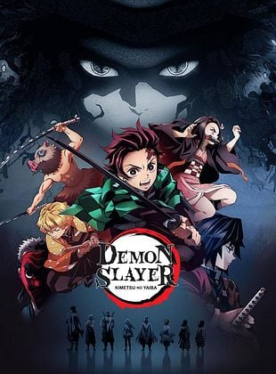
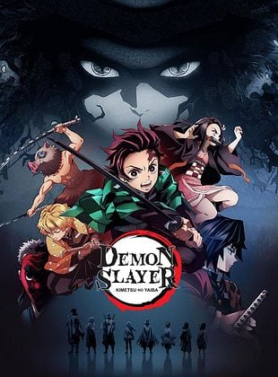

Brissa Flores
Hi guys! Soy Brissa, amante del café, el anime y la tecnologÃa.
Bienvenidos a mi Página Super Perso.
Presentación Personal
Durante el dÃa, soy una chica normal con una vida normal pero en mi hay algo que nadie sabe... es mi secreto. Soy una otaku y me encanta el anime, el manga y todo lo relacionado con la cultura japonesa!!!.
Mi experiencia en la carrera
Hasta ahora, he aprendido bastante sobre programación y bases de datos. He realizado proyectos que me han retado y permitido descubrir mi estilo propio, combinando lo técnico con lo artÃstico y me súper divierte seguir aprendiendo.
🌸🌟💻✨
Mi perspectiva y aprendizajes sobre desarrollo web
El desarrollo web me ha ayudado a ser más creativa, paciente y a nunca dejar de aprender por mi cuenta. Me gusta experimentar con colores, tipografÃas y animaciones para crear sitios únicos y divertidos de usar.
🌸🌟💻✨
 
